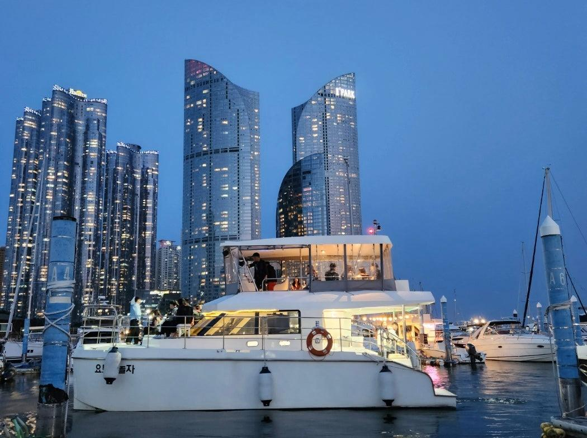

ENTJ 추천 여행지
부산 해운대

추천 이유
ENTJ는 목표 지향적이고 새로운 경험을 주도적으로 즐기는 성향입니다. 부산 해운대는 도시적인 세련미와 탁 트인 바다 풍경을 동시에 즐길 수 있으며, 프리미엄 호텔과 다양한 액티비티를 경험할 수 있어 ENTJ에게 잘 어울리는 여행지입니다.
추천 여행 코스
- 해운대 해수욕장 산책
- 부산 엑스더스카이 전망대
- 마린시티 프라이빗 요트 체험
- 해운대 오션뷰 레스토랑 방문
추천 포인트
- 도시와 바다를 동시에 즐길 수 있음
- 고급 호텔과 럭셔리 여행 가능
- 야경과 오션뷰 명소가 풍부함
- 특별한 경험을 원하는 여행자에게 적합